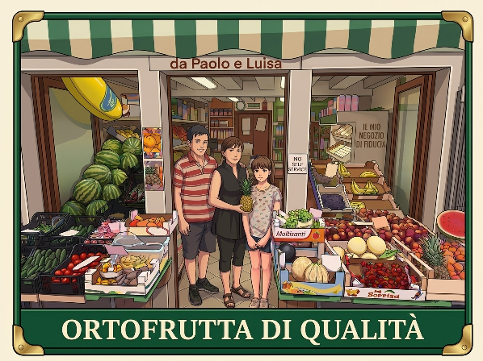

Home
Orari
Chi Siamo
Dove Siamo

LE RICETTE DI LUISA
Lasagne della Domenica
I segreti di Luisa per Lasagne con Ragù vegetale..
Il Nostro Ragù di Verdrure
Una cottura lenta e ingredienti scelti per un sapore d'altri tempi.
Scaloppine ai Funghi
Un secondo piatto veloce, cremoso e profumato, pronto in 15 minuti.
Insalata Ricca d'Estate
Fresca, sfiziosa e leggera, con il nostro tocco speciale.